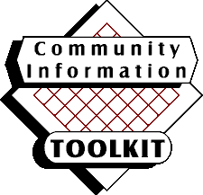

Welcome to the Community Information Toolkit
The Community Information Toolkit provides information, training
materials, and demonstration software to assist in the creation
of a new community information network. The Library of Michigan provides this Toolkit
on behalf of public libraries in Michigan, and any institutions
anywhere that embark on a community information networking project.
(Note: clicking on links on this
page will cause your Web browser to open the content in a new
window.)
The Toolkit consists of these components:
- Book: A 250 page book entitled Building a Community
Information Network: A Guidebook.
- Videos: A set of 4 video programs suitable for use
in training your community information network team.
- Training Materials: A series of Powerpoint presentations
that you can use as-is or with your own local modifications
- Software: A pair of demonstration applications: a
community calendar and a community forum.
See the Overview for more information about each of these components
as well as how to make best use of each.
About the Project
This is an archival web site. This toolkit was produced in 1999.
The Community Information Toolkit provides Michigan public
libraries, and their communities, an array of assistance in developing
local, community information for publication on the World Wide
Web. Information in the Toolkit includes:
- A basic overview of community information networks, and a
review of successful community information projects
- Sample vision/mission statements taken from real projects
- Examples and strategies for forming local partnerships and
for fund raising
- Training modules for identifying content, soliciting content,
organizing content, integrating content, converting content into
digital form, publishing & maintaining content and archiving
Web sites
- Local site hardware and software recommendations
- A bibliography
- Complete step-by-step instructions on installing Windows
NT and Microsoft Internet Information Server as a Web server
environment
- Demonstration software: a community calendar and a community
discussion forum, with complete step-by-step instructions.
A defined set of Michigan
library agencies received the Community Information Toolkit
as part of the initial distribution.
Web Address and E-mail Address
This site was originally hosted at, www.mel.org. The Toolkit was also
provided in CD-ROM format to the agencies mentioned above.
This site is an archive site for the Toolkit. If you have questions or comments, see
the original authors.
Toolkit Demonstration Sites
Two demonstration sites were selected to test the concepts
behind the Toolkit:
- Rochester Hills Public Library created Greater Rochester History Online (GHRO) focusing
on cultural, historical and governmental information of the community.
Community partners are Rochester Hills Museum at Van Hoosen Farm
and the Special Collections Department of Oakland University.
The project revolved around digitization of the Ray Russell postcard
collection which includes over 300 postcards depicting downtown
Rochester and other scenes of early community life in the Greater
Rochester area in the late nineteenth and early twentieth centuries.
The project uses a database implemented in MS-Access by Rochester
staff member Larry Neal. The database provides the potential
for multiple views of the information across geography, time,
and other dimensions.
- The Romeo
District Library worked with The Library Network to provide
extensive training in Web publishing to members of the community
who desired to participate in the new Web effort. Romeo seeks
to deliver information on topics such as transportation services
and schedules, in particular for the STAR (Senior Transportation
Through Advanced Reservation) project. Romeo has also addressed
the needs of its visually and/or physically handicapped residents
both by the information they will have online and by the installation
of adaptive technologies to enable access by the visually impaired
at the library site.
Project Management, Creation, and Funding
Merit Network,
Inc. managed the Toolkit project. The Library Network provided training and
other support. See the complete
project participant information.
The creation of the Toolkit was funded by a grant from Ameritech
through the Library of Michigan Foundation.
Copyright ©1999 Library of Michigan Foundation
The components of the Community Information Toolkit may be
used in non-commercial applications without further permission
from the copyright owner as long as this copyright notice is maintained
and prominently displayed.
THIS PRODUCT IS DISTRIBUTED WITHOUT WARRANTY OF ANY KIND, EITHER
EXPRESSED OR IMPLIED, INCLUDING IMPLIED WARRANTIES OF MERCHANTABILITY
OR FITNESS FOR A PARTICULAR PURPOSE.